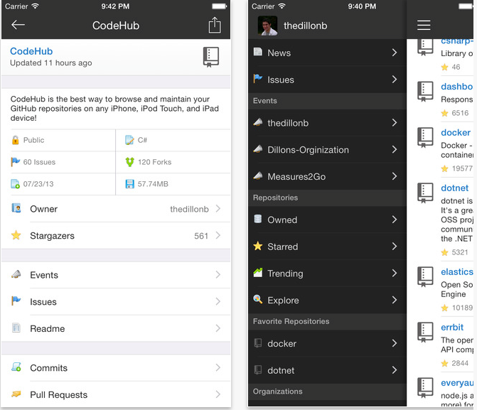
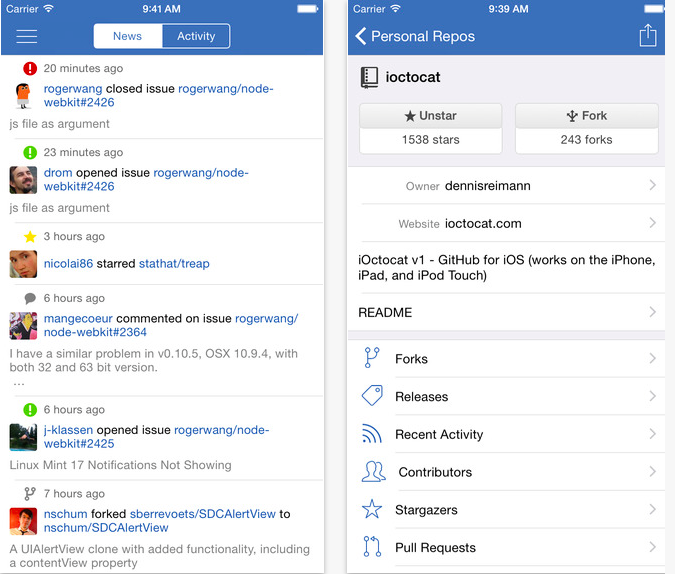

Github-клиенты для iPhone и iPad
Ирина Чернова 22 Сен, 2015
Трудно представить, что еще 7 лет назад не существовало Github, всемирно известного сервиса для совместной работы над кодом. У многих разработчиков не проходит и дня, в течение которого они не проявляли бы активность на этом сайте. Мобильная версия github.com не слишком удобна и функционально урезана, поэтому лучше пользоваться сервисом с помощью iOS-клиентов: CodeHub и iOctocat.
Это приложение позволяет просматривать и редактировать информацию в своем профиле, создавать новые репозитории, форки, вносить правки в файлы в удобном редакторе кода. Еще в программе можно читать новости и анонсы событий, подписываться на обновления чужих профилей, писать комментарии и многое другое. Работать можно в режиме командной строки или в графическом интерфейсе приложения. CodeHub – opensourse-проект. Исходники доступны в этом репозитории.
Достоинства:
Недостатки: не обнаружено.
Цена: бесплатно, но есть premium-версии за 59 и 119 рублей.
iOctocat
Octocat («восьмикот») – талисман Github. Отсюда и название приложения. Как и CodeHub содержит все необходимое для полноценного использования сервиса. iOctocat – также является проектом с открытым исходным кодом и любой желающий может поучаствовать в создании следующей версии приложения.
Достоинства:
Недостатки: не обнаружено.
Цена: бесплатно, но есть продвинутые версии за 429 и 849 рублей.
Знай и используй: